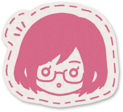

All Tashigi
This zine is all about Captain Tashigi, our favorite marine swordswoman! We want to have pieces of her with her most important people, doing cool sword stuff, experiencing the horrors, being nerdy, and more. All Tashigi, all the time!